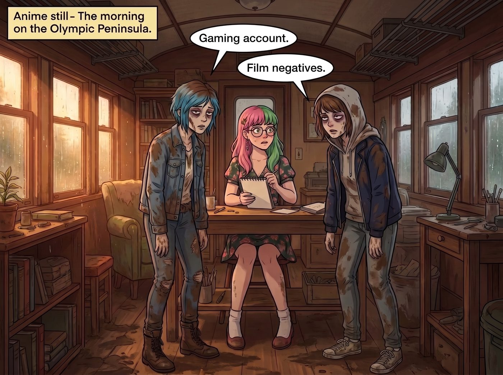

氣象衛星的租金

清晨的奧林匹亞半島，雨過天晴。二號車廂的廚房裡飄著 Kate 剛烤好的蔓越莓鬆餅香氣。
帶著一身泥巴、睡了不到四個小時的 Chloe 和 Max，頂著巨大的黑眼圈，像兩隻急需餵食的喪屍一樣，一左一右將實習生 Lily 堵在了她的工作台前。
一、被遺忘的密碼
「底片。」「遊戲帳號。」兩人異口同聲，眼神裡透著如果得不到滿足就會立刻殺人的凶光。昨晚她們可是冒著被機器狗咬斷腿的風險，幫這個小惡魔完成了午夜合規審計，現在是兌現合約的時候了。
Lily 端著熱牛奶，乖巧地坐在電競椅上，推了推反光的圓框眼鏡。
「兩位學姐的任務執行得非常完美。Apex 物流的非法伺服器已經被我徹底格式化，實體底片證據也已經存入保險箱。」Lily 露出一個純潔無暇的微笑，「但是……關於妳們的解鎖密碼，我遇到了一個小小的合規障礙。」
「什麼障礙？」Chloe 瞇起眼睛，像一隻準備發動攻擊的獵豹。
Lily 無辜地眨了眨大眼睛，語氣輕柔地說：「昨天為了確保密碼的絕對安全性，我使用了二百五十六位元的隨機亂碼加密。但是，由於我昨晚過度調用腦容量去執行任務，海馬迴神經元出現了短暫的疲勞……所以，我把密碼給忘了。」
車廂裡的空氣瞬間凝固。
「妳……忘了？」Max 瞪大了眼睛，感覺心臟漏跳了一拍。
「妳這個披著人皮的惡魔！！！」Chloe 爆發出一聲怒吼，直接撲了上去，雙手作勢就要掐住 Lily 纖細的脖子，「老娘跟妳拚了！我要把妳扔進外面的核反應爐裡當燃料！」
就在 Chloe 的手距離 Lily 的脖子還有零點一公分，而 Max 也準備衝上來幫忙大義滅親的千鈞一髮之際——
「滴。」
Lily 的左手輕輕在平板電腦上點了一下，螢幕上瞬間彈出了一個巨大的保險箱圖示。
「開個玩笑，學姐們。」Lily 甚至連眼睛都沒眨一下，語氣平靜得像是在播報天氣，「我把所有的極密金鑰都存進密碼管理器裡了。端到端加密，軍用級防護，就算我真的得了阿茲海默症，妳們的數位資產也依然安全無虞。解鎖指令已發送。」
Chloe 的雙手停在半空中，看著自己已經恢復連線的遊戲螢幕，咬牙切齒地收回了手。「我發誓，Lily，總有一天我會在這杯牛奶裡給妳下瀉藥。」
二、聯邦氣象資產的異常追蹤
就在這時，工作台上方那塊專門用來監控外部網路頻段的隱藏螢幕，突然閃爍起刺眼的紅光。
「警告。偵測到聯邦通訊管理局異常追蹤。來源：美國太空軍，科羅拉多州彼得森太空軍基地。」
車廂裡的輕鬆氣氛瞬間被打破。Victoria 原本正端著咖啡走過來，看到螢幕上那排代表太空軍的紅色代碼，手裡的咖啡杯啪的一聲掉在了地毯上。
「我就知道！！！」名媛發出了崩潰的尖叫，轉身就往自己的房間跑，「他們發現了！我們昨晚動了軍方的東西！我現在就去給我的律師打電話！」
螢幕上彈出了一個強制接入的加密視訊對話方塊。畫面中出現了一個穿著軍服、臉色鐵青的太空軍技術少校。
「未知IP的操作者，」少校的聲音透著軍方的冷酷與不悅，「我們的系統偵測到，昨晚有人未經授權，擅自更改了一顆民用氣象觀測衛星的姿態控制指令，將鏡頭偏轉至非既定觀測區域，並調用了最高解析度模式。根據《聯邦通訊法》與《國家氣象資產保護條例》，這屬於嚴重的聯邦財產濫用行為。我們已經鎖定了你們的模糊物理位置，請立刻解釋你們的行為，否則將依法移送聯邦調查局處理。」
Chloe 默默地放下了手裡剛拿起的短管步槍，Max 緊張地握住了拳頭。
三、機器人實戰數據的價值
只有 Lily。她依然端坐在椅子上，乖巧地喝了一口牛奶，然後對著攝像頭露出了一個甜美得令人毛骨悚然的微笑。
「早上好，少校先生。」Lily 軟糯的聲音在高度緊張的對峙中顯得格格不入，「關於昨晚借用貴局氣象衛星鏡頭一事，我深表歉意。當時是為了配合一項森林環境違規蒐證行動，臨時申請了局部高解析度觀測窗口。但在您深究責任之前，我強烈建議您先查收一下我剛剛透過加密頻段發送給您的附件。」
技術少校愣了一下，低頭看了一眼自己的終端。「你發了什麼鬼東西？這是……無人機與機器狗的戰鬥數據？」
「準確地說，這是一份名為《商用重型無人機蜂群對抗軍用級四足機器人的非對稱實戰損控報告》。」
Lily 推了推眼鏡，語氣瞬間切換到了國防承包商的專業模式：「這份數據記錄了昨晚三十架商用無人機在惡劣天氣下，如何透過自殺式撞擊，完美癱瘓兩台搭載熱成像與聲納的四足防禦機甲。裡面包含了極度珍貴的實戰軌跡、感測器盲區分析，以及裝甲應力極限數據。而這些畫面之所以如此清晰，正是拜貴局那顆氣象衛星的高解析度鏡頭所賜。我想，五角大廈的未來都市不對稱作戰研究室，現在應該非常缺乏這種類比實戰的高清遙測數據吧？」
少校看著螢幕上那些密密麻麻、極具價值的戰場建模數據，臉上的憤怒逐漸被震驚和難以置信所取代。在現代軍事研發中，這種毫無底線、真刀真槍的機器人鬥毆實戰數據，是花幾千萬美金在實驗室裡都模擬不出來的無價之寶。
「你……你用我們的氣象衛星，順便拍了一場矽谷公司的機器人大戰？」少校的聲音有些顫抖。
「是的。這份實戰數據，就當作是昨晚借用衛星觀測窗口的租金。」Lily 溫柔地說道，「請您向您的直屬長官請示一下，這筆交易是否划算？」
四、下不為例的默契
視訊畫面被短暫靜音。少校轉過頭，神情激動地在跟畫面外的一個掛著將官軍銜的人快速交談。透過唇語，Chloe 甚至能看到那個將軍說了一句：「Holy shit, keep the data.」
三十秒後，畫面重新亮起。少校咳嗽了一聲，原本鐵青的臉色勉強擠出了一絲官方的嚴肅：「咳……總部經過評估，認為這份損控數據對國防部具有一定的參考價值。考量到這次的觀測請求並未造成實質性的氣象數據缺失或設備損壞，我們將以口頭警告結案，並要求貴方今後任何觀測需求，必須提前走正式申請流程。但警告你，下不為例！」
「合作愉快，長官。願聯邦的安全與您同在。」Lily 乖巧地揮了揮手。
通訊切斷，螢幕恢復了平靜。
Victoria 從門後探出頭來，精緻的臉上寫滿了震驚與麻木。「妳……妳剛才用一堆無人機撞毀機器狗的影片，跟太空軍達成了和解？」
「這是高淨值數據資產的等價交換，Victoria 學姐。」Lily 滿意地合上平板電腦，轉頭看向廚房，「Kate 學姐，請問鬆餅好了嗎？」
Kate 端著一大盤熱騰騰的鬆餅走了出來，臉上洋溢著無比欣慰的笑容。
「大家看，這就是溝通的力量呀。」小天使把鬆餅放在桌上，溫柔地摸了摸 Lily 的頭，「Lily 真的很乖呢，不僅幫軍方的叔叔們做了科學實驗的觀察記錄，還主動把作業分享給了他們。只要大家願意互相分享知識，這個世界就不會有那麼多可怕的誤會了呢。」
面對大天使將一場聯邦財產濫用調查解讀為小學生分享科學觀察作業，所有人，包括剛從緊張氣氛裡回過神的 Chloe 和 Max，都只能默默地拿起叉子，開始專心吃鬆餅。
在這個由核反應爐、街頭霸王、老錢名媛和黑魔法實習生組成的瘋狂家庭裡，似乎真的沒有什麼是搞不定的。